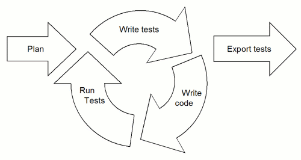

CubicTest


The main reason why CubicTest was created was to fill a gap in the tools that support agile software development of web applications. There were few or no tools that let the "customer" (non-technical / business-side person) easily write the tests of a web application, let alone a tool that provided the visual abstractions needed to make the customer comfortable with writing the tests before the application was implemented.
The goal of CubicTest is to make it easy and fun to write web-application tests, for both technical and non-technical people. These tests should ideally be written by the "owner" of the functionality, and preferrably before the application is implemented, such that the tests can be used in all phases of the application under construction.
Tests for new functionality is typically written at the start of an iteration, when the user story is detailed. The customer should ideally "own" the tests. The following figure is an attempt to illustrate how CubicTest is used when implementing a user story:
